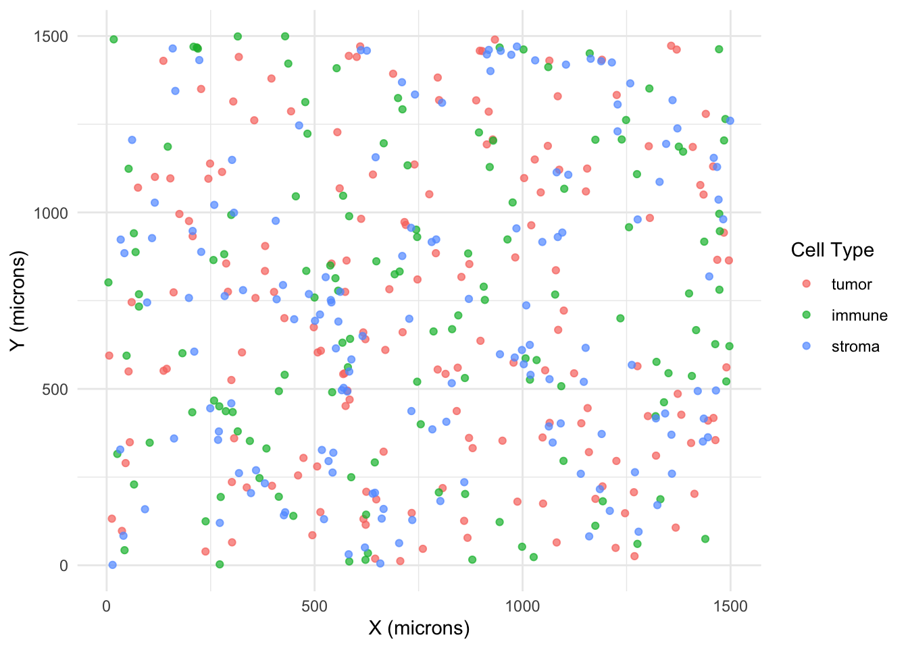
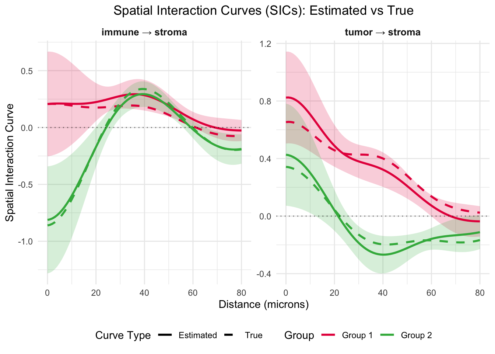

knitr::opts_chunk$set(echo = TRUE, message = FALSE, warning = FALSE)
library(SHADE)
library(dplyr)
library(tidyr)
library(stringr)
library(ggplot2)
library(tibble)
library(Matrix)
library(spatstat.geom)
library(spatstat.random)
library(posterior)SHADE Workflow Demo with Simulated Spatial Data
Overview
This demo illustrates the SHADE model described in the paper “SHADE: A Multilevel Bayesian Framework for Modeling Directional Spatial Interactions in Tissue Microenvironments”. SHADE is a Bayesian hierarchical model designed to estimate asymmetric spatial associations between cell types across spatial scales and biological levels (image, patient, cohort).
We will:
- Simulate spatial point patterns with biologically plausible asymmetry
- Construct interaction features using radial basis functions
- Prepare data for Bayesian inference using logistic approximation
- Fit the SHADE model
- Summarize and compare posterior results to ground truth
1. Load Packages
We start by loading all necessary libraries, including your SHADE package and its dependencies.
2. Simulate Spatial Data
We simulate a small dataset of tissue images with three cell types using the new simulate_spatial_data function. This creates a hierarchical dataset where immune cells are spatially attracted to tumor cells.
# Simulate spatial data with directional associations
args <- list(
n_images = 40,
n_patients = 20,
n_groups = 2,
cell_types = c("tumor", "immune", "stroma"),
target_type = "stroma", # stroma cells influenced by tumor and immune
n_cells_per_type = 150,
seed = 2025,
verbose = FALSE
)
sim_result <- do.call(simulate_spatial_data,args)
# Extract data and true parameters
coords <- sim_result$data
true_params <- sim_result$true_params
# Create patient metadata for hierarchical modeling
image_ids <- levels(coords$image_id)
patient_ids <- rep(paste0("pt_", 1:20), each = 2)
patient_metadata <- tibble(
Spot = image_ids,
Patient = patient_ids,
Group = rep(paste0("group_", 1:2), each = 20)
)Here is what an example point pattern from this simulated dataset looks like:
coords %>%
filter(image_id == "img_1") %>%
ggplot(aes(x, y, color = cell_type)) +
geom_point(alpha = 0.7) +
theme_minimal() +
labs(x = "X (microns)", y = "Y (microns)", color = "Cell Type")
3. Prepare the Data for SHADE
We prepare the simulated data for SHADE modeling, specifying the target cell type and hierarchical structure.
prep <- prepare_spatial_model_data(
x = coords$x,
y = coords$y,
cell_type = coords$cell_type,
image_id = coords$image_id,
patient_metadata = patient_metadata,
type_idx = 3, # Index of target cell type (stroma)
n_dummy = 300,
n_basis_functions = 3
)4. Fit the SHADE Model
We use a logistic regression approximation to fit the conditional intensity function. Inference is performed via HMC using cmdstanr.
set.seed(2025)
fit <- run_SHADE_model(
prep$stan_data,
# method="variational",
# draws=1e3,
chains = 1,
iter_warmup = 300,
iter_sampling = 100,
refresh = 0,
output_dir = "Introduction_cache/"
)Running MCMC with 1 chain...Chain 1 finished in 29.2 seconds.5. Summarize Posterior Estimates
We summarize the posterior draws for global-level coefficients using an rvar object. Posterior draws capture uncertainty in spatial association curves (SICs).
rvars <- posterior::as_draws_rvars(fit$draws())
beta_global_rvar <- rvars$beta_global[-1, ]
beta_global_rvarrvar<100>[6,2] mean ± sd:
[,1] [,2]
[1,] 0.810 ± 0.102 0.439 ± 0.124
[2,] 0.307 ± 0.039 -0.277 ± 0.048
[3,] -0.045 ± 0.036 -0.113 ± 0.044
[4,] 0.194 ± 0.162 -0.827 ± 0.159
[5,] 0.285 ± 0.051 0.335 ± 0.041
[6,] -0.033 ± 0.035 -0.206 ± 0.046 true_params$betas_global[-1,] [,1] [,2]
[1,] 0.63624454 0.3510757
[2,] 0.38657724 -0.1978482
[3,] 0.01782070 -0.1724826
[4,] 0.19855594 -0.8775270
[5,] 0.18548772 0.3824548
[6,] -0.08142717 -0.2104819These coefficient estimates look quite close. Next, we can use these estimates to construct the main quantity of interest, the spatial interaction curves.
6. Visualize Spatial Interaction Curves
We can now easily visualize the estimated SICs and compare them with the true curves:
plot_spatial_interaction_curves(fit, prep, true_params = true_params, distance_range = c(0, 80))
The plot is faceted by source-target cell type interactions, showing how the stroma target cell type is influenced by each source cell type (tumor and immune). Each facet displays both the estimated curves (solid lines) with 95% simultaneous credible intervals (shaded regions) and the true curves used to generate the data (dashed lines). This allows us to validate that our Bayesian inference is successfully recovering the underlying spatial associations for each specific cell type interaction.
Next Steps
- Performing posterior predictive checks - how well can the model predict the locations of stromal cells?
- Visualizing the patient-level and image-level curves as well, and compare them with their group-level counterparts.
- Apply SHADE to real multiplexed imaging data